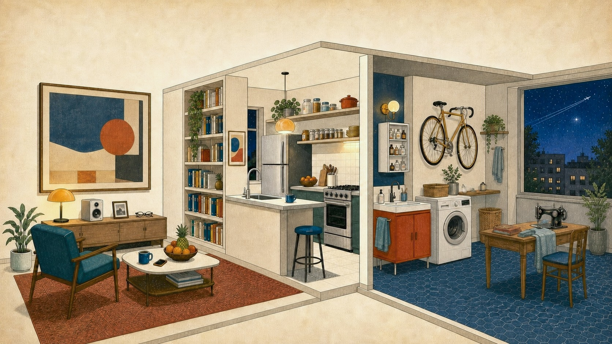
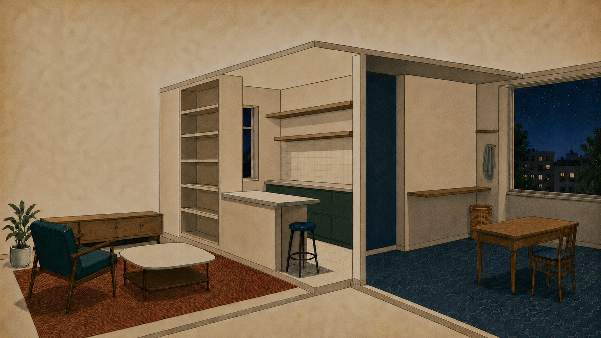

Stories of everyday abundance
Any song, at home
Edward Bellamy, 1888
Edward Bellamy once imagined music on demand and said it would be "the limit of human felicity." A modern apartment is full of things that once drew the same kind of awe.
scroll to move through the apartment
The hard part is not noticing a new marvel. It is remembering it after it has become furniture.

